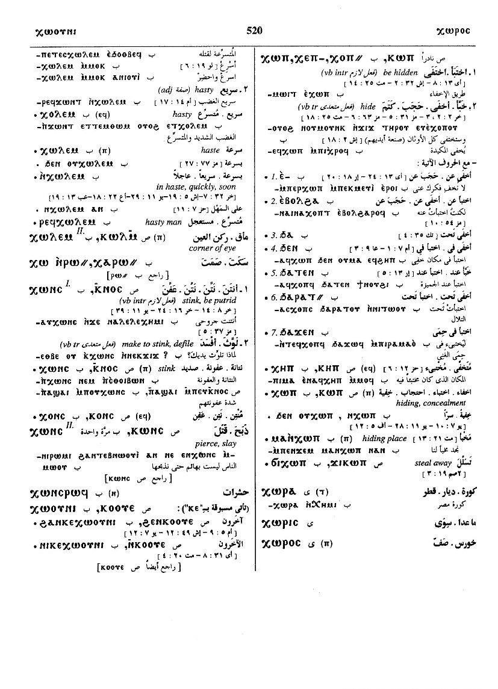

(verb)
intr: hasten [ταχυνειν, σπευδειν, σπουδαζειν]
(F)
ⲕⲱⲗⲉⲙ
(B) ⲭⲱⲗⲉⲙ
(A, sA) ⲕⲗⲁⲙ, ϭⲗⲁⲙ
(B) ⲭⲟⲗⲉⲙ+
(B) ⲭⲱⲗⲉⲙ
(A, sA) ⲕⲗⲁⲙ, ϭⲗⲁⲙ
(B) ⲭⲟⲗⲉⲙ+
| (A, sA, B, F) ― (ⲡ) | (noun male)
haste [σπουδησ]480 |
Crum: 104b | |||||||
| (B) ⲣⲉϥⲭ. | hasty man481 | ||||||||
| (F)
ⲛⲕ.
(adv.)
(B) ⲛⲭ. (adv.) (A) ⲛϭ. (adv.) |
(adverb)
in haste, quickly, soon [ταχυ, ευθυσ]482 |
||||||||
See also:
| view | (B, F) ⲓⲱⲥ (B) ⲓⲏⲥ+ {oftenest, as if ⲓⲱⲥ} | (verb) intr:
― hasten, be urgent [σπουδαζειν, σπευδειν, ταχυνειν] ― refl, meaning same743 |
| view | (B) ϩⲱⲗϥ | (adverb) as advb, hastily2176 |
| view | (S) ϭⲁⲡϭⲉⲡ, ϭⲉⲡϭⲡ (B) ϫⲁⲡϫⲉⲡ | (verb) intr: be hurried, anxious [σπευδειν]194 |
| view | (sA) ϣⲱⲧⲡ | (verb) tr (refl): hasten1992 |
| view | (S, sA, F) ϭⲉⲡⲏ (S) ϭⲓⲡⲏ (F) ϭⲏⲡⲉ | (verb) intr: hasten
[σπευδειν]
tr (refl): [σπευδειν] | as advb [ταχυ, ταχεωσ]161 |
Crum: 104

104
Dawoud: 520a

520